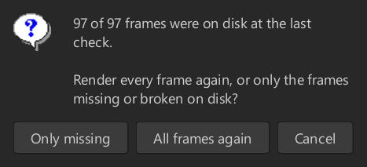
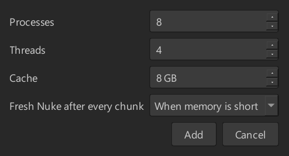

Быстрый локальный рендер для Nuke. Рендер делится на части (чанки), которые одновременно считают несколько процессов Nuke. После рендера JKrender проверяет каждый кадр на диске.
Содержание
1Как работает JKrender
2Установка и запуск из Nuke
3Карта окна
4Карточки рендеров и строка управления
5Плитки и карта кадров
6Панель Output: просмотр и кадры
7Панели Chunks и Details
8Панели Workers и Log
9Панель System
10Settings: все настройки
11Как настроить рендер
12Test this script
13Контроль RAM и VRAM
14Проверки, звуки, сбои, данные
15Мышь и клавиши: шпаргалка
16Если что-то не работает
1 Как работает JKrender
Обычный рендер в Nuke идёт в одном процессе, который кадр за кадром считает весь скрипт. Но один Nuke редко загружает все 32 потока процессора. Поэтому JKrender запускает несколько процессов Nuke рядом. Каждый открывает скрипт только один раз, а затем получает куски работы, так называемые чанки: например, 10 кадров подряд.
Три числа, от которых зависит скорость
Processes
Сколько процессов Nuke работает одновременно (для всех рендеров вместе). Больше процессов делают больше за раз, но и занимают больше RAM и VRAM.
Threads
Сколько потоков процессора получает каждый процесс (Nuke -m). Processes × Threads должно давать примерно число потоков ПК (здесь 32).
Cache
Лимит кэша одного процесса в ГБ (Nuke -c). На деле процесс занимает больше. Сколько, показывает System › RAM.
По умолчанию 8 процессов × 4 потока. Тяжёлые композитинг-скрипты, которые один Nuke уже загружает сам (Defocus, Denoise), часто быстрее на 4 × 8 и занимают вдвое меньше RAM. Скриптам, у которых растёт VRAM, нужно меньше процессов. Что лучше для твоего скрипта, измерит Test this script (глава 12).
Где что хранится
Что
Где
Настройки
~/.nuke/JKrender/settings/settings.json (у каждого пользователя свои). Старые версии хранили их в ~/.jkrender; JKrender сам переносит их при первом запуске.
Логи рендеров
~/.nuke/JKrender/log/: одна папка на рендер (снимок скрипта, job, лог каждого процесса Nuke и report.json). Старше 15 дней удаляются.
Результаты тестов
~/.nuke/JKrender/settings/test_results
Отрендеренные кадры
Туда, куда их отправляет Write. JKrender никогда не удаляет их сам, только кнопкой Delete.
2 Установка и запуск из Nuke
Установка (один раз)
1Скопируй всю папку JKrender в %USERPROFILE%\.nuke\. Если скачать её с GitHub как zip, она называется JKrender-main: переименуй её в JKrender.
2Добавь в ~/.nuke/init.py строку (при необходимости создай файл):
nuke.pluginAddPath("./JKrender")
3Перезапусти Nuke. При первом запуске JKrender спросит, скачать ли numpy и OpenEXR для просмотра EXR (около 15 МБ). Если откажешься, рендер работает, только без просмотра EXR. Чтобы вопрос появился снова, удали файл lib/DECLINED.
Дополнительно: для подробностей и плеера MOV/MP4 добавь ffprobe/ffmpeg в PATH (winget install ffmpeg). Нужен Nuke 16 (PySide6).
Новая версия: скопируй новые файлы поверх старых. Папки lib, log и settings остаются.
Меню JKrender в Nuke
Пункт
Что делает
Render Selected Write(s) Ctrl+Alt+R
Отправляет выбранные Write (или Group с Write внутри) в JKrender. Каждый Write получает свою карточку. Если окно ещё не открыто, оно откроется.
Open Renders Folder
Открывает папку с логами рендеров.
Если скрипт не сохранён, появится вопрос Save it and render?: рендерится сохранённая версия.
Что происходит после отправки
Снимок (snapshot): рендерится скрипт в том виде, каким он был при отправке. В Nuke можно сразу работать и сохранять дальше, идущий рендер это не затрагивает. Чтобы отрендерить изменённый скрипт, отправь его из Nuke ещё раз: новая отправка заменит старую карточку.
Вопрос о кэше: если открыт какой-то Nuke, Render спрашивает, очистить ли его буферы, кэш воспроизведения и кэш Blink, чтобы рендеру хватило памяти. Ответ по умолчанию No, рендер стартует в любом случае. Дисковый кэш не трогается. После обновления JKrender нужно один раз перезапустить Nuke, чтобы это работало.
3 Карта окна
Наверху карточки рендеров и строка управления, под ними числа и карта кадров. Остальное занимают три панели: слева Output / Chunks / Details, справа вверху Workers / Log и справа внизу System / Settings. Границы между панелями можно перетаскивать.
1
2
3
4
5
6
7
8
9
10
1Карточки рендеров: один Write (рендер) на карточку. Щелчок выбирает его.
2Когда будут готовы все рендеры.
3Render, Pause, Stop для выбранного рендера.
4Slate, Framerange, Processes, Threads, Cache и Chunk этого рендера (только чтение).
5Плитки с числами: кадры, время, скорость, процессы, проверки.
6Карта кадров по чанкам. Щелчок по кадру показывает его.
7Output: просмотр кадра с воспроизведением.
8Output: фильтр, проверки, папка, удаление и список кадров.
9Workers: временная шкала каждого процесса Nuke.
10System: нагрузка ПК и таблица процессов.
4 Карточки рендеров и строка управления
Карточка рендера
Каждый отправленный Write — одна карточка: номер, имя скрипта, имя Write, полоса прогресса и состояние (Ready, Waiting, Rendering, Paused, Checking output, Done, Failed, Stopped). Щелчок выбирает карточку, и всё окно показывает этот рендер. Shift+щелчок выбирает несколько карточек; Render, Pause и Stop тогда действуют на все, а Render again и на готовые (спрашивает один раз за все). × закрывает рендер, кадры на диске остаются.
Рендеры делят один бюджет процессов. Рядом идёт не больше, чем указано в Settings Max renders at once (по умолчанию 3); процессы делятся между ними (8 → 4 + 4 → 3 + 3 + 2).
Карточка справа: ALL RENDERS DONE IN
Когда должны закончиться все идущие и ждущие рендеры при скорости, с которой ПК рендерит сейчас. Ниже: во сколько закончатся, сколько уже идут и сколько кадров осталось. Когда все пройдут, карточка показывает ALL RENDERS TOOK: сколько всё заняло.
Строка управления
Элемент
Что делает
Render
Запускает выбранный рендер (или несколько выбранных). Кадры, которые уже в порядке на диске, пропускает. После Stop рендер продолжает с того места, где остановился (Resume). Если у рендера есть кадры на диске (готовый, остановленный или с кадрами из прошлого), он спрашивает: Only missing рендерит только недостающие или повреждённые кадры (остальные на карте тёмно-зелёные), All frames again рендерит всё заново, Cancel — ничего.
Pause
Замораживает все процессы Nuke рендера посреди кадра (процессор освобождается, память остаётся занятой). Повторный щелчок продолжает.
Stop
Останавливает рендер, завершает его процессы и удаляет недописанные кадры и временные файлы Nuke. Готовые кадры остаются.
Slate
Рендерится ли кадр-слейт и на каком кадре (Settings › Job).
Framerange
Кадры этого рендера: диапазон из Nuke, если ты не изменил его в Settings › Job.
Processes · Threads · Cache · Chunk
С чем идёт рендер. Меняется в Settings › Processes and Chunks; число процессов и во время работы, правой кнопкой в System.
Цветная полоса
Результат рендера, см. ниже.
Цветная полоса с результатом
Цвет
Что значит
Пример
Зелёный
Готово, все кадры на диске и прошли проверку.
Done in 2:06. All 97 frames are on disk and pass the check.
Жёлтый
Готово, но что-то не проверено или выглядит подозрительно (кадры не проверены, подозрительно маленькие; слейт маленьким не считается).
frames not checked · 2 suspiciously small
Красный
Ошибка: рендер не удался, повреждённые кадры или Check pixels нашёл проблему (NaN, чёрный кадр…).
2 broken frames · Output: Problems shows them
Серый
Идёт: Checking pixels…, ожидание свободных процессов и т. п.
Waiting: 1 render already uses the PC
5 Плитки и карта кадров
Плитка
Что показывает
Frames
Готовые / все кадры рендера, проценты и сколько рендерится сейчас.
Elapsed
Сколько идёт рендер (без пауз).
Remaining
Оценка оставшегося времени при текущей скорости.
Speed
Кадры в секунду и в минуту, все процессы вместе. Лучшее число для сравнения настроек.
Frame time
Сколько длится один кадр в одном процессе и сколько кадров считается одновременно (× N at once).
Nuke processes
Сколько процессов рендерит / работает, плюс те, что загружаются или ждут.
Check frames
Проверка файлов: отсутствующие, пустые, обрезанные, нечитаемые и подозрительно маленькие кадры.
Check pixels
Проверка пикселей (EXR, PNG, JPEG, TIFF, DPX): чёрные, пустые и одноцветные кадры, кадры, совпадающие с другим, и кадр, чей размер, каналы или битность отличаются от остальных. В EXR также NaN, inf и сжатие.
Карта кадров
Каждый прямоугольник — один кадр, сгруппированы по чанкам (C01, C02…). Щелчок по кадру открывает его в просмотре. Цвета:
ждёт (queued)
рендерится
готово
уже был на диске, пропущен (Only missing)
подозрительно маленький
не удался / повреждён
Render again: всё или только недостающее

Если у рендера есть кадры на диске и ты нажмёшь Render again, он спросит: Only missing (по умолчанию) рендерит только недостающие или повреждённые кадры; остальные пропускаются и на карте тёмно-зелёные. All frames again рендерит всё заново, Cancel — ничего. Фильм (MOV, MP4) не спрашивает: фильм — один файл и рендерится целиком.
Если через Shift выбрано несколько карточек, он спрашивает один раз за все (например, 27 of 27 frames of 3 renders…). Кадры, которые были на диске уже при открытии или остались от прогона до Stop, тёмно-зелёные. В Output фильтр Rendered показывает тогда только кадры этого прогона, All — все.
Двойной щелчок: возврат ко всему кадру. Если он уже целиком, просмотр разворачивается на все три панели; назад клавишей Esc.
Space запускает и останавливает воспроизведение. Никогда не нажимает кнопку, поэтому не останавливает рендер.
Полоса под просмотром
Предыдущий кадр · Play/Pause (воспроизводит готовые кадры по кругу с fps скрипта) · следующий кадр · ползунок по всем кадрам · номер кадра · развернуть (просмотр на три панели, Esc назад). Под полосой: путь, размер, разрешение, каналы и результаты проверок кадра.
Кнопки
Элемент
Что делает
Фильтр
All: все кадры сразу: отрендеренные, пропущенные, повреждённые, not on disk и те, что ещё будут рендериться, а также кадры на диске вне Framerange. Остальные фильтры — его части: Rendered: только кадры этого прогона. Problems: ошибки, подозрительно маленькие кадры и находки проверки пикселей. Framerange: только кадры выбранного диапазона.
Check frames
Заново проверяет файлы всех кадров: существует, не пустой, целый и читаемый, не намного меньше остальных. Кадр, которого ещё нет на диске, остаётся not on disk и не считается повреждённым.
Check pixels
В фоне проверяет пиксели каждого кадра (EXR, PNG, JPEG, TIFF, DPX): чёрные, пустые и одноцветные кадры, кадры, совпадающие с другим в любом месте последовательности, другой размер, каналы или битность; в EXR также NaN, inf и сжатие. Около 0,1 с на кадр 4K. Только сообщает, ничего не перерендеривает.
Open folder
Открывает папку с результатом.
Delete
Удаляет отрендеренные кадры с диска: все (по умолчанию) или заданный диапазон. Сначала спрашивает.
Список кадров
Столбцы: Frame, State, Chunk, Worker (какой процесс его считал), Time, Size, Check frames, Check pixels. С фильтром All все кадры в списке с самого начала, а их состояние меняется по ходу рендера. После Render again кадры не исчезают: они остаются как on disk, queued again со старым размером и временем (их можно смотреть и воспроизводить), пока новый рендер их не перезапишет. Кадры на диске вне выбранного Framerange остаются в списке с пометкой not in Framerange.
Правая кнопка на кадре (или на нескольких выбранных): Render this frame / batch: перерендеривает только эти кадры (если рендер идёт, они добавляются в него). Delete this frame / batch: удаляет их с диска (только когда рендер не идёт).
MOV / MP4 / MXF: вместо списка кадров показывается один файл фильма с подробностями (кодек, профиль, fps, разрешение, таймкод, число кадров по сравнению с настройками Write) и плеер с лупой. Кнопки Check video, Open folder, Delete video. Фильм нельзя разделить: его рендерит один процесс со всеми потоками (так показывают и Settings).
7 Панели Chunks и Details
Chunks
Одна строка на чанк: Chunk (C01…), Frames (диапазон), Count, State, Process (кто его считает), Done, Time, s / frame и Note (почему чанк повторялся и т. п.).
Правая кнопка:Render again (чанк заново), Show process log (лог процесса, который его считал), Delete frames from chunk (только когда рендер не идёт).
Details
Всё о рендере в одном месте: скрипт и его снимок, Write и выходные пути, формат, fps, диапазон, версия Nuke, с какими Processes × Threads × Cache он идёт, время и пути к логам. Пригодится, когда нужно точно знать, что рендерилось.
8 Панели Workers и Log
Workers: временная шкала процессов
Одна строка на процесс Nuke (W01–W08), время слева направо. серый: Nuke стартует и открывает скрипт (в том числе при замене на свежий Nuke, с подписью again: fresh Nuke). зелёный: готовые чанки (с номером чанка). оранжевый: чанк, который рендерится сейчас. Чанки других рендеров приглушены (Settings › Dim other renders in Workers). Сразу видно, стоит ли процесс, перезапускается ли или долго открывает скрипт.
Правая кнопка на строке процесса открывает то же меню, что и в панели System (глава 9).
Log
Сообщения JKrender и вывод каждого процесса Nuke со временем. Фильтр: All, JKrender only (только сообщения JKrender), Errors and warnings. Open log folder открывает папку с логами этого рендера: снимок скрипта, job.json и worker_NN.log каждого процесса.
Каждый процесс сообщает в логе, через сколько он был готов, с разбивкой на старт Nuke и открытие скрипта. Если старт длится 15 с и больше, JKrender предупреждает. Медленный старт обычно связан с лицензией или стартовыми скриптами пайплайна, а не с самим скриптом.
9 Панель System
Плитки и графики
CPU (загрузка и потоки), RAM (общая), Nuke RAM (сколько занимают процессы Nuke), Disk write, Disk read, Network, GPU (загрузка и VRAM). График Load показывает CPU, RAM, GPU и VRAM в %, график Disk / network — передачу в МБ/с. CPU threads: по столбику на поток процессора, видно, загружен ли весь ПК.
Таблица процессов
Столбец
Значение
Process
Номер процесса (W01…).
Render
Над каким рендером работает.
State
Что делает: loading, busy, idle, paused, closing… busy → fresh Nuke (RAM 91 %): после своего чанка получит свежий Nuke, потому что RAM у лимита (глава 13). Чего ждёт, например wait: VRAM 75 → 14 % (3 starting): сейчас 75 %, ещё один процесс поместится ниже 14 %, потому что 3 процесса ещё стартуют и JKrender держит для них место; подсказка расскажет больше.
CPU used
Сколько потоков процессора процесс действительно использует.
RAM · Cache
Реальная память процесса и его кэш Nuke относительно лимита.
GPU
Загрузка видеокарты и VRAM этого процесса.
Frames · Last frame · Avg frame
Сколько кадров сделал, сколько длился последний и в среднем.
Script load
За сколько Nuke стартовал и открыл скрипт.
Uptime · Chunk · Chunks
Сколько работает, на каком чанке и сколько чанков сделал.
PID · Frame · Peak RAM
Скрытые столбцы: ID процесса в Windows, текущий кадр, наибольшая RAM.
Щелчок по заголовку таблицы открывает список столбцов: галочкой столбец показывается или скрывается, стрелки меняют порядок. Столбцы можно перетаскивать и за заголовок. Ширина и порядок сохраняются при закрытии окна.
Правая кнопка на процессе (в таблице или на строке в Workers) открывает меню справа. При нескольких идущих рендерах у Add process to есть подменю с выбором рендера.
Пункт меню
Что делает
Pause / Resume
Останавливает или отпускает только этот процесс.
Close after this chunk
Процесс доделает свой чанк и закроется. Processes уменьшится на 1 и так останется.
Close
Закрывает процесс сразу. Его чанк возвращается в очередь. На его место может встать другой.
Work on › рендер
Переводит процесс на другой идущий рендер.
Add process
Запускает ещё один процесс (и щелчком по пустому месту таблицы). Processes увеличится на 1 и так останется. Лимиты RAM и VRAM по-прежнему действуют.
Start again
Для закрытого процесса: запускает его снова.
Show process log
Открывает лог этого процесса.
10 Settings: все настройки
Настройки сохраняются сразу. У каждой есть подсказка. Reset to defaults возвращает всё к исходному виду, включая столбцы таблиц; то, что JKrender узнал о скриптах, остаётся.
General
Настройка
Что делает
По умолч.
Start render on open
Рендер начинается сразу после открытия окна, без нажатия Render.
выкл.
Start next render when one ends
Когда рендер закончится или не удастся, сам запускается следующий ещё не запущенный рендер в порядке карточек. Рендер, который ты остановил, ничего не запускает.
выкл.
Sound when a render ends
Звук после рендера, когда пройдут включённые проверки. Другой звук при ошибке, повреждённых кадрах или проблеме в пикселях. Остановленный рендер молчит.
вкл.
Check frames when a render ends
После рендера (и после Stop) один раз каждый отрендеренный кадр: есть, не пустой, целый и читаемый, не намного меньше остальных. Пока идёт рендер, папку вывода никто не читает. Выключено: повреждённый кадр считается готовым, пока не нажмёшь Check frames.
вкл.
Check pixels when a render ends
Сразу после проверки кадров в фоне проверяет пиксели всех кадров (чёрные, одноцветные, одинаковые, другой формат; в EXR также NaN и inf). Только сообщает.
вкл.
Check pixels when a render opens
Та же проверка кадров, которые уже есть на диске, сразу после открытия рендера. Render её прерывает.
вкл.
Max renders at once
1: рендеры идут по очереди, следующий начинает загружаться, когда предыдущий доделывает последние чанки (первый шот готов раньше). 2–3: идут рядом и делят процессы (в сумме не быстрее, но от каждого шота кадры видны рано).
3
Show processes of all renders
Workers и System показывают процессы всех рендеров. Выключено: только выбранного.
вкл.
Dim other renders in Workers
На временной шкале ярко видны чанки выбранного рендера, остальные приглушены.
вкл.
Delete old render logs
При открытии JKrender удаляет папки логов старше заданного числа дней. Кадры никогда.
вкл., 15 дней
Группы в General разделены тонкими линиями. При повторном рендере шкала Workers всегда показывает только новый прогон.
Job (для рендера, выбранного вверху)
Настройка
Что делает
По умолч.
Slate frame
Проект начинается после слейта (например, 1001, слейт на 1000). Включено: каждый рендер дополнительно рендерит слейт на этом кадре.
вкл., 1000
Framerange
Кадры рендера, например 1001-1100 или 1001-1010,1050. У каждого рендера свой. Пустое поле возвращает диапазон из Nuke. Подтверждается Enter или щелчком в другом месте. Во время рендера заблокировано. Кадры на диске остаются.
из Nuke
Test › Test this script…
Измеряет настройки для этого ПК на кадрах со всего шота и показывает самую быструю (глава 12).
—
Performance and Optimization
Настройка
Что делает
По умолч.
Use GPU
Запускает Nuke с --gpu, и GPU-ноды (Kronos, ZDefocus, Denoise…) считает видеокарта. Лёгкий 4K-скрипт с Kronos был в 3 раза быстрее. У каждого процесса своя VRAM.
вкл.
VRAM limit
Выше лимита работает меньше процессов. На 97 % сразу закрывается процесс, запущенный последним; так же, если карта заполнена и ни один кадр долго не заканчивается. В пределах 5 % от лимита помогает Fresh Nuke after every chunk. Глава 13.
вкл., 95 %
RAM limit
Выше лимита работает меньше процессов: первым закрывается запущенный последним. Когда память освободится, он вернётся. Так Windows не начнёт свопить.
вкл., 95 %
Processes and Chunks
Настройка
Что делает
По умолч.
Processes
Процессы Nuke для всех рендеров вместе.
8
Threads
Потоки на процесс (-m).
4
Cache
Лимит кэша Nuke на процесс в ГБ (-c). Сколько процесс берёт на самом деле, показывает System › RAM. Слишком маленький кэш замедляет рендер: Nuke тогда выбрасывает и пересчитывает.
по RAM
Chunk: Auto / Fixed
Auto: примерно 4 чанка на процесс, не больше 10 кадров (46 кадров при 8 процессах → 2, 96 → 3, 320+ → 10). Fixed: размер задаёшь справа. Действует для чанков, которые ещё не начались.
Auto
Smaller chunks at the end
К концу рендера чанки уменьшаются вплоть до одиночных кадров, и все процессы заканчивают примерно одновременно.
вкл.
Fresh Nuke after every chunk
После своего чанка процесс закрывает Nuke и открывает скрипт в новом, с RAM и VRAM снова в начале. Это стоит одной загрузки скрипта. When memory is short: только когда RAM или VRAM 30 с подряд в пределах 5 % от лимита, и по одному процессу. Always: после каждого чанка. Off: никогда. Глава 13.
When memory is short
Processes, Threads и Cache во время рендера заблокированы. Для фильма они показывают 1 процесс со всеми потоками. Число процессов во время рендера меняется правой кнопкой в System (Add process, Close after this chunk).
11 Как настроить рендер
Рекомендуемый порядок для нового или тяжёлого скрипта:
VRAM растёт с каждым кадром; больше процессов на карту не поместится.
VRAM +1,7 ГБ на кадр → 1 × 32
Как понять, что настройка неудачная
Мало памяти
System › RAM у лимита, в State — wait: RAM …, процессы закрываются и стартуют снова (серые блоки в Workers). Решение: меньше процессов с бо́льшим числом потоков или меньше Cache.
Полная видеокарта
VRAM на 95 %, процессы закрываются из-за VRAM. JKrender сам предложит меньше процессов с бо́льшим числом потоков (но сам ничего не меняет). Решение: меньше процессов с бо́льшим числом потоков (Test this script покажет сколько) или выключить Use GPU.
Простаивающий CPU
CPU threads в основном пустые, а у RAM есть запас. Решение: добавь процесс (правая кнопка › Add process) или увеличь Threads.
Долгое открытие скрипта
Серые блоки в Workers длинные, Script load высокий. При старте Nuke спорят за лицензии и стартовые скрипты. Решение: с более длинными чанками это меньше заметно; с самим скриптом обычно не связано.
Лучшая мера — плитка Speed (кадры в минуту). Сравнивай её между настройками на одном скрипте или доверь это Test this script.
12 Test this script
Готовый тест: зелёная строка самая быстрая, оранжевая вторая. Winner показывает, насколько дольше шёл бы весь шот с остальными.
Кнопки наверху
Create tests смотрит, какой это компьютер (строка под кнопками: CPU, ядра и потоки, у Intel производительные и энергоэффективные ядра, RAM, видеокарта), и создаёт 7 настроек от 1 процесса со всеми потоками до стольких процессов, сколько выдержит ПК: каждому процессу не меньше 4 потоков и не меньше 4 ГБ кэша. На 32 потоках и 94 ГБ: 1×32, 2×16, 3×10, 4×8, 5×6, 6×5, 8×4. Свыше 64 потоков процесс получает не больше 64 (одна группа процессоров в Windows). Заменяет всё в таблице.
Add test добавляет свою настройку (Processes, Threads, Cache и Fresh Nuke after every chunk), Remove test удаляет выбранные. Правая кнопка на строке: Edit test. Свои тесты запоминаются. Таблица показывает Fresh Nuke в названии настройки: 4 x 8, cache 12 GB, fresh every chunk или never fresh; без приписки — When memory is short.
Cache каждой настройки — вся RAM для Nuke (лимит RAM минус резерв для Windows), делённая на число процессов, минус 4 ГБ, которые процесс берёт вне кэша. Что работает в данный момент, не важно.
Frames per setup (справа вверху): сколько кадров рендерит каждая настройка в Round 2. Если в шоте меньше кадров, это будет показано, и рендерятся все.
Как идёт тест
Кадры берутся из 6 мест по всему шоту (от первого кадра до последнего), в каждом по несколько кадров подряд. Все настройки в раунде рендерят одни и те же кадры.
Round 1: каждая настройка недолго, 3 кадра на процесс настройки с наибольшим числом процессов (на 32 потоках 24 кадра), не больше 3 минут. Round 2: две самые быстрые (и любая в пределах 5 % от лучшей) снова с Frames per setup, не меньше 4 кадров на процесс.
Frames / min считается, когда процессы уже идут: старт Nuke и первый кадр каждого процесса не учитываются; в длинном рендере они бывают только раз.
Столбцы: Avg processes (сколько процессов в среднем рендерило), Round 1, Round 2 (время раунда, кадры, старт), Frame, CPU / RAM / GPU / VRAM avg, Fell (упавшие процессы), Winner, State. Щелчок по заголовку сортирует, столбцы можно растягивать и перемещать.
Use these settings переносит зелёную строку в Settings, включая Fresh Nuke. Кадры идут в тестовую папку и удаляются; render hooks у Write в тесте не запускаются. Таблицы остаются в ~/.nuke/JKrender/settings/test_results.

Окно Add test (и такое же Edit test по правой кнопке).
Во время теста ничего другого рендериться не должно: тест измерял бы два рендера, борющихся за ПК. Рядом с рендером тест не запустится.
13 Контроль RAM и VRAM
JKrender следит за памятью, чтобы Windows не начала свопить, а видеокарта не заполнилась.
Чтобы процесс вернулся, под лимитом должен поместиться один процесс такого размера, как у процессов этого рендера (до этого: его Cache + 4 ГБ), с запасом 2 % и с тем, что идущие процессы ещё возьмут. Чего ждёт процесс, показывает столбец State в System, например wait: VRAM 75 → 69 %: VRAM на 75 % и должна упасть ниже 69 %, чтобы поместился ещё один процесс. wait: VRAM 75 → 14 % (3 starting): три процесса ещё стартуют, и JKrender держит для них место в полном размере. Другие состояния: wait: 25 s (процесс только что упал), wait: W03 1st frame (ждёт первый кадр W03, чтобы увидеть, сколько берёт процесс), wait: VRAM ok, checking (место есть, проверяет, что оно останется).
Карта полна и ничего не идёт: если VRAM выше лимита и ни один процесс не заканчивает кадр дольше, чем 4× обычное время кадра (не меньше минуты), Nuke, скорее всего, перешёл на CPU и все процессы ждут. Тогда сразу закрывается процесс, запущенный последним, а его чанк возвращается в очередь.
Fresh Nuke after every chunk
Во время рендера Nuke держит память, которая ему уже не нужна: процесс тяжёлого скрипта за первые ~20 кадров может вырасти с 2 до 7 ГБ VRAM. Свежий Nuke снова начинает с малого, поэтому на карту помещается больше процессов. По умолчанию, в режиме When memory is short, это происходит, только когда RAM или VRAM 30 с подряд в пределах 5 % от лимита (одного скачка мало), и по одному процессу: следующий — только когда новый Nuke отрендерит первый кадр, а память всё ещё у лимита. Остальные тем временем рендерят дальше. Процесс, который получает свежий Nuke, показывает в State busy → fresh Nuke (VRAM 93 %); на последних чанках ничего не заменяется.
Лимита VRAM на процесс нет. Cache (-c) ограничивает только RAM-кэш Nuke. Видеопамять одного процесса ограничить нельзя: Windows этого не умеет, а настройки кэша Blink в Nuke при рендере не действуют (измерено). Поэтому JKrender управляет VRAM числом процессов и свежими Nuke. Cache — это лимит кэша, а не вся память процесса; настоящее число — в System › RAM.
14 Проверки, звуки, сбои и данные
Проверка результата
Рендер с обрезанным кадром (1030) и чёрным кадром (1031), оба найдены вручную через Check frames и Check pixels: красная полоса, красные кадры на карте, фильтр Problems показывает только их.
Проверка
Когда
Что ищет
Check frames
После рендера и после Stop (можно выключить) и кнопкой. Всегда при открытии рендера и перед Render.
После рендера, при открытии (можно выключить) и кнопкой.
EXR, PNG, JPEG, TIFF и DPX: чёрные, пустые и одноцветные кадры, кадры, совпадающие с другим, другой размер, каналы и битность. В EXR также NaN, inf и сжатие. Другие форматы: только одинаковые файлы.
Movie check
Для MOV, MP4 и MXF.
Кодек, профиль, fps, разрешение, таймкод и число кадров по сравнению с настройками Write.
Звук после рендера
После рендера проверки идут в порядке Check frames → Check pixels; звук раздаётся, когда пройдут включённые (если обе выключены — сразу после рендера).
Весёлый звук: всё в порядке. Звук ошибки: рендер не удался, есть повреждённые кадры или проверка пикселей нашла проблему. Вручную остановленный рендер молчит.
Если JKrender упадёт
Карточки вернутся при следующем открытии JKrender (например, со следующим рендером, отправленным из Nuke). То, что есть на диске, учитывается, а оставшиеся процессы Nuke завершаются. Рендер, который шёл, ждёт Render и затем дорендеривает недостающее. Если закрыть окно обычно, ничего не возвращается.
Данные рендера
Каждый рендер записывает в свою папку логов report.json: CPU, RAM и видеокарта этого ПК, настройки, скорость, пики памяти, закрытия из-за лимитов, старт Nuke, открытие скрипта и типы нод в скрипте. В нём нет имён скриптов, путей и ошибок; скрипт узнаётся только по ID, одинаковому во всех его версиях. Если наткнёшься на ошибку, отправь папку логов рендера.
15 Мышь и клавиши: шпаргалка
Где и что
Результат
Ctrl+Alt+R в Nuke
Отправляет выбранные Write в JKrender.
Щелчок по карточке рендера
Выбирает рендер; всё окно показывает его данные.
Shift + щелчок по карточкам
Выбирает несколько рендеров для Render, Render again, Pause, Stop.
Щелчок по кадру на карте кадров
Открывает кадр в просмотре.
Space
Воспроизвести / остановить просмотр (никогда не останавливает рендер).
Колесо / перетаскивание в просмотре
Масштаб / сдвиг изображения.
Двойной щелчок в просмотре
Весь кадр; если он уже целиком, большой просмотр.
Esc
Выход из большого просмотра.
Правая кнопка на кадре (Output)
Render this frame / batch, Delete this frame / batch.
Правая кнопка на чанке (Chunks)
Render again, Show process log, Delete frames from chunk.
Правая кнопка на процессе (System, Workers)
Pause, Close after this chunk, Close, Work on, Add process, Start again, Show process log.
Правая кнопка по пустому месту в System
Add process.
Щелчок по заголовку таблицы System
Выбор и порядок столбцов.
Перетаскивание границы панелей
Меняет размер панелей (сохраняется).
Framerange + Enter
Подтверждает новый диапазон (Settings › Job).
Готовый рендер: зелёная полоса, карточка справа вверху показывает, сколько длились рендеры.
16 Если что-то не работает
Проблема
Что делать
Процессы Nuke долго стартуют (30–50 с)
Обычно это старт Nuke (лицензия, стартовые скрипты пайплайна), пока ПК рендерит. Log показывает разбивку Nuke started in … / script opened in ….
Процессы закрываются и стартуют снова
Кончилась RAM или VRAM (State в System, Log). Меньше процессов с бо́льшим числом потоков или меньше Cache; Test this script покажет, что быстрее.
В State — busy → fresh Nuke
RAM или VRAM уже 30 с у лимита; после чанка процесс получит свежий Nuke (Settings › Fresh Nuke after every chunk). Если это происходит постоянно, процессов больше, чем помещается.
Весь рендер медленнее, чем в прошлый раз
Проверь Cache: слишком маленький (например, 4 ГБ для тяжёлого скрипта) значит, что Nuke выбрасывает и пересчитывает, и кадры идут в несколько раз дольше.
Скрипт открывается в Nuke с ошибкой нода
Например, LensDistortion2.serialiseKnob: Failed to load (нод из другой версии, нет плагина). JKrender рендерит дальше, как Nuke в GUI; сообщение есть в логе процесса.
Жёлтая полоса «not checked»
Проверка кадров выключена (Check frames when a render ends) или не прошла. Нажми Check frames.
Красная полоса
Output › фильтр Problems покажет, какие кадры. Правой кнопкой Render this frame / batch. Полоса пересчитывается и после ручных Check frames и Check pixels.
Нет просмотра EXR
Нет numpy/OpenEXR. Удали lib/DECLINED и перезапусти Nuke или установи их по README.
Рендер не начался сразу
Состояние Waiting: другие рендеры уже загружают ПК (Max renders at once) или ждёт память.
Очистка кэша Nuke не работает
После обновления JKrender один раз перезапусти Nuke.
Непонятно, что рендерилось
Панель Details и Log › Open log folder (снимок скрипта и job.json).
JKrender — альфа-версия. В тестах работает, но будь готов к мелочам. Если наткнёшься на ошибку, отправь автору папку логов рендера (Open Renders Folder) и описание того, что произошло.
JKrender 0.94.3 alpha · github.com/JanKanta/JKrender · руководство обновлено 9 ноября 2026 г. Снимки сделаны на примерном рендере (шоты sh010 и sh020).